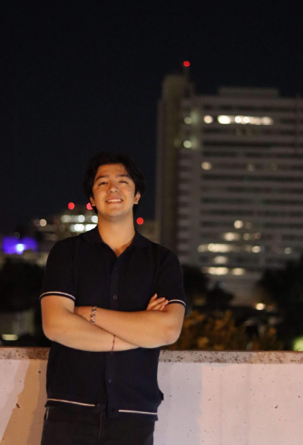
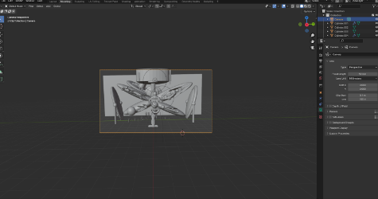
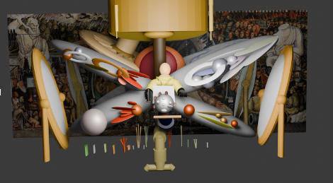
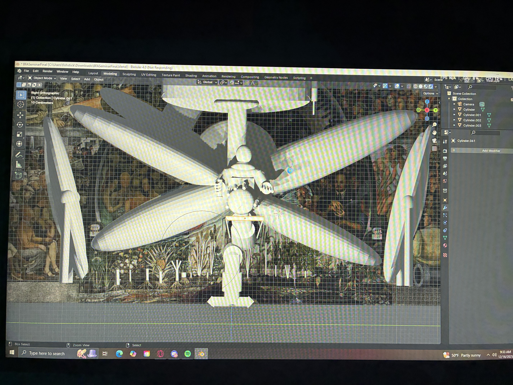

BENJAMIN "Ben" SANDOVAL
( HE/HIM )
LinkedIn: LINK
Portfolio: LINK
About the Artist
Benjamin Sandoval is a Digital Media Artist, mediums focus on 3D design, Video editing, Pixel Art and Game Design. Born and Raised in the Bay Area of East Side San Jose. He creates all of his artwork through image and creativity of interests. Visualizing Artworks through all sorts of different mediums of art. Exploring the message on multiple areas of personality, interest, culture or personal experiences and life changing goals
Timeless Crossroads
What motivates my art is creativity, and I mainly focus on different mediums of art, allowing my creative nature to flourish. Much of my inspiration in art is my personal life, including my culture, hobbies, and favorite activities growing up. I enjoy watching anime and playing video games. I use that inspiration to create concept art and design. A significant portion of what I learned from my classes at San Jose State University involved discovering new ways to create art within the realm of technology. A lot, which includes 3D modeling, Photography, Video editing, and video game editing. Some I explored with the idea of engaging with more software-based products like Adobe. I mainly enjoyed working with Adobe software. Such as Photoshop, Premiere Pro, After Effects, and Lightroom. My structure to create these projects was mainly all towards my interests and my favorite things to do, and my daily habits also inspire how creative I am when it comes to art. My passion and creativity give me more freedom to explore my options as an artist. For my portfolio, I wanted to show a demonstration of what I can explore through works of digital art, mainly in my interests. Seeing what I can make, create, and design. Mainly uses of Adobe software, showing the type of work I can make with the performance I learned from my semesters at San Jose State University.



